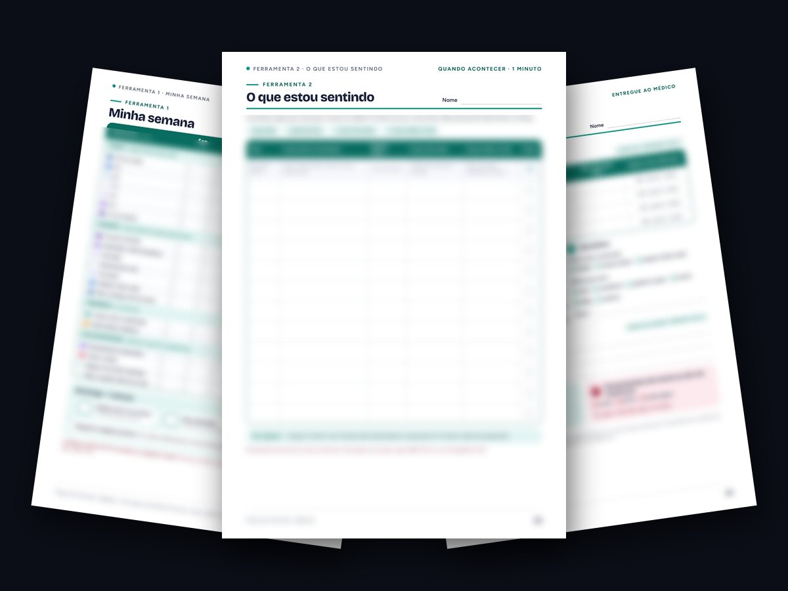
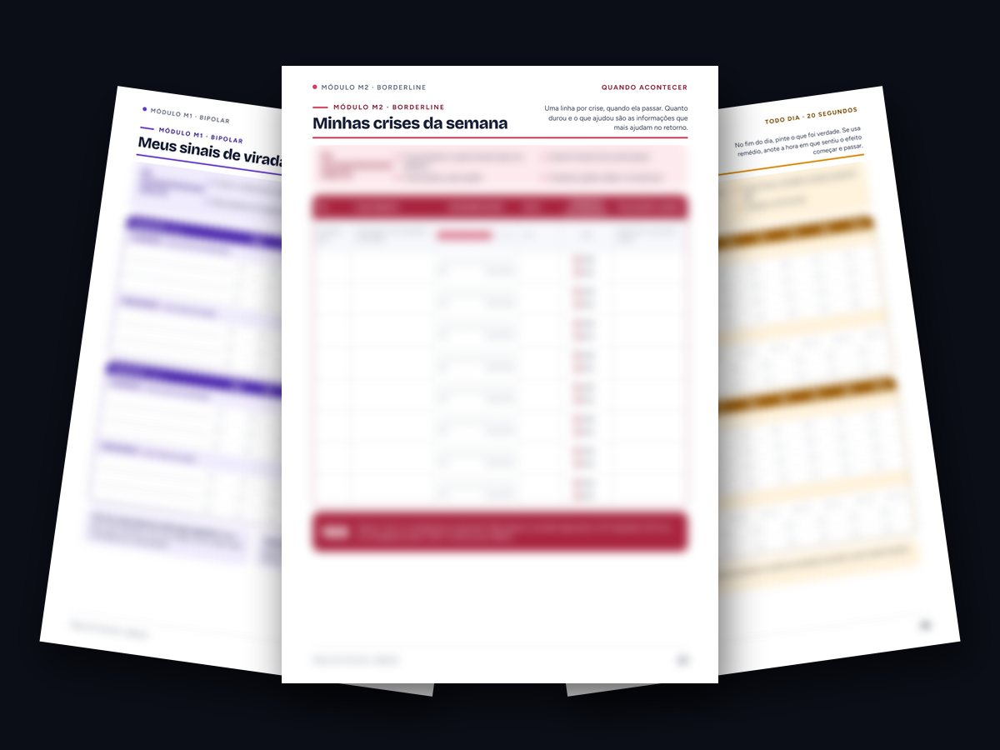
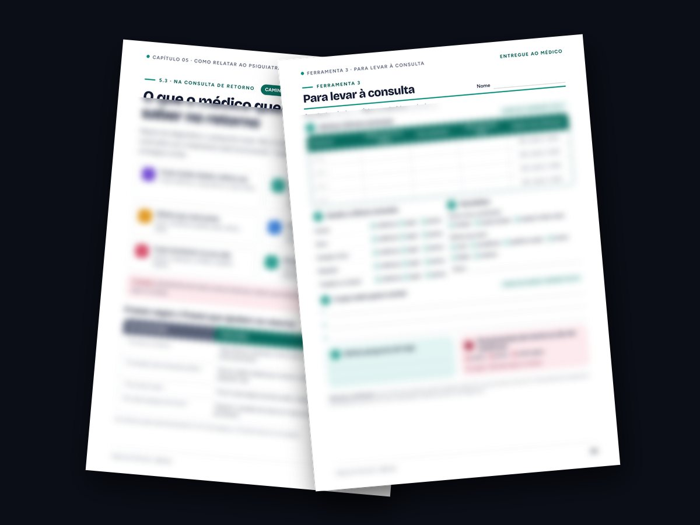
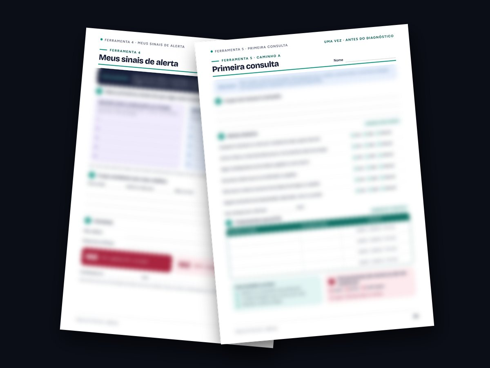

Leve ao psiquiatra tudo o que aconteceu desde a última consulta.
Guia + kit de 8 folhas para imprimir. Registre em 20 segundos por dia e chegue a cada consulta com tudo em uma página.
O kit · 8 folhas
Cada folha tem uma hora certa.
O mínimo é 20 segundos por dia. O resto você usa quando acontecer algo e na véspera da consulta.
- F1 Minha semana · todo dia
- F2 O que estou sentindo · quando acontecer
- F3 Para levar à consulta · na véspera

Novo · módulos por diagnóstico
Uma folha para cada diagnóstico.
Bipolar: seus sinais de virada. Borderline: suas crises da semana. TDAH: se o seu dia funcionou. Use o seu, ou mais de um.
- Bipolar
- Borderline
- TDAH

Na consulta de retorno
Em vez de “tô mais ou menos”, fatos.
Um capítulo novo mostra o que o médico quer saber em cada retorno: o que mudou, remédios, efeitos, sono e o que aconteceu na sua vida.
- O que contar
- Frases que ajudam
- Uma página por consulta

Para o começo e para os dias difíceis
Sinais de alerta e primeira consulta.
Preencha com seu médico os seus primeiros sinais de que algo está mudando. Se ainda não tem diagnóstico, a folha da primeira consulta organiza a sua história.
- F4 Meus sinais de alerta
- F5 Primeira consulta

O guia · 5 capítulos
Entenda o que diferencia cada quadro.
Bipolar 1 e 2, Borderline e TDAH explicados sem jargão, com tabela comparativa e régua da duração.
- Bipolar tipos 1 e 2
- Borderline
- TDAH em adultos
- Tabela comparativa

Para quem é
Para observar e contar. Nunca para diagnosticar.
É para você se…
- já está em tratamento e quer aproveitar cada retorno;
- sai da consulta lembrando do que esqueceu de falar;
- vai à primeira consulta e quer explicar bem o que sente;
- quer ajudar alguém da família.
Não é para…
- fazer diagnóstico sozinho;
- substituir consulta ou tratamento;
- mudar medicação por conta própria.

Quem criou
Organizado como um engenheiro organiza um sistema.
Elias Jr, engenheiro de software e fundador da Draxora: observar, registrar e comunicar com precisão.
Guia + kit de acompanhamento
Mapa dos Sintomas
- Guia ilustrado de 29 páginas, 5 capítulos
- Novo: o que contar na consulta de retorno
- 5 ferramentas para imprimir, do dia a dia à consulta
- 3 módulos: Bipolar, Borderline e TDAH
- Tabela comparativa e régua da duração
Acesso imediato · Garantia de 7 dias pela Hotmart
Dúvidas